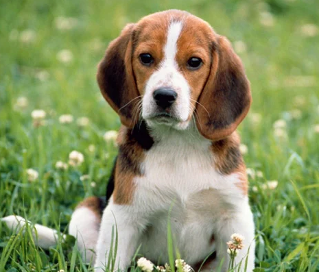
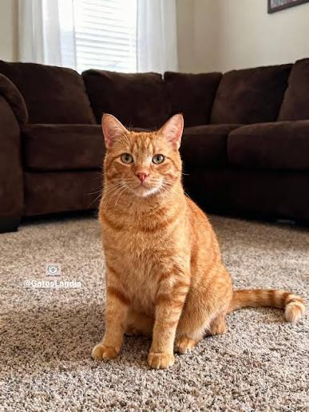
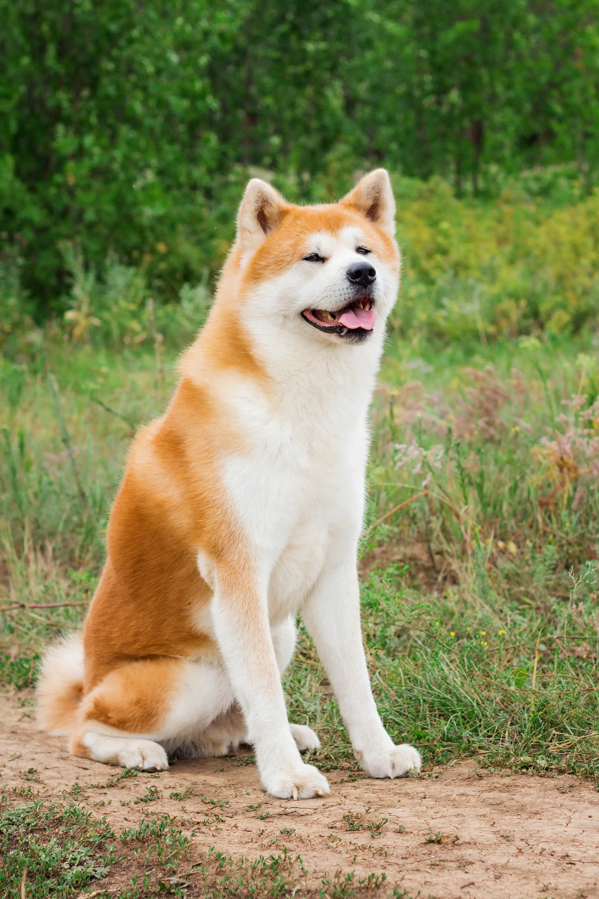
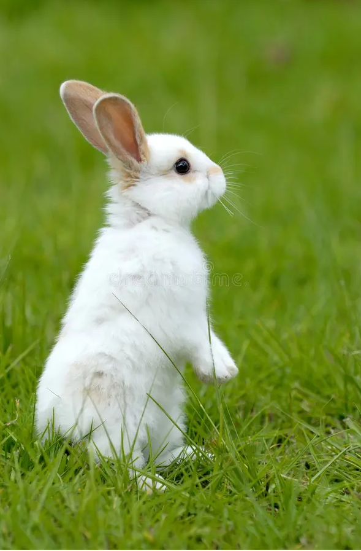
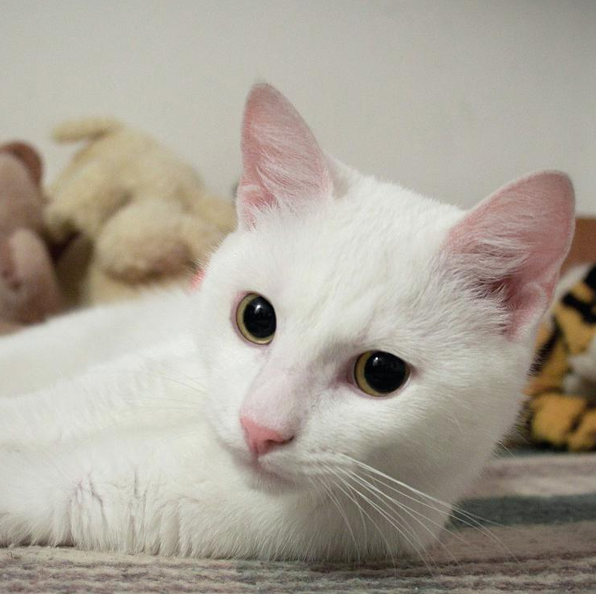
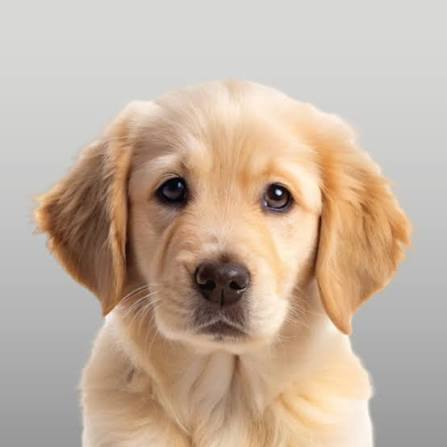

Luna
Perro 2 años Hembra Mediano
Cariñosa y juguetona. Está vacunada y castrada.
Elegi como queres ver las mascotas, marca tus favoritos y solicita y adotá!!
▦ Ver en tarjetas ☰ Ver en lista

Perro 2 años Hembra Mediano
Cariñosa y juguetona. Está vacunada y castrada.

Gato 1 año Macho Pequeño
Curioso y tranquilo. Le encanta dormir al sol y jugar con pelotitas de tenis

Perro 5 años Macho Grande
Perro adulto, muy obediente. Ideal para una familia con patio.

Conejo 8 meses Hembra Pequeño
Dulce y timida. Come verduras frescas y necesita un espacio amplio.

Gato 3 años Hembra Pequeño
Independiente. Desparasitada y con todo al día.

Perro 4 meses Macho Mediano
Cachorro con mucha energia. Necesita paseos diarios y mucho amor.